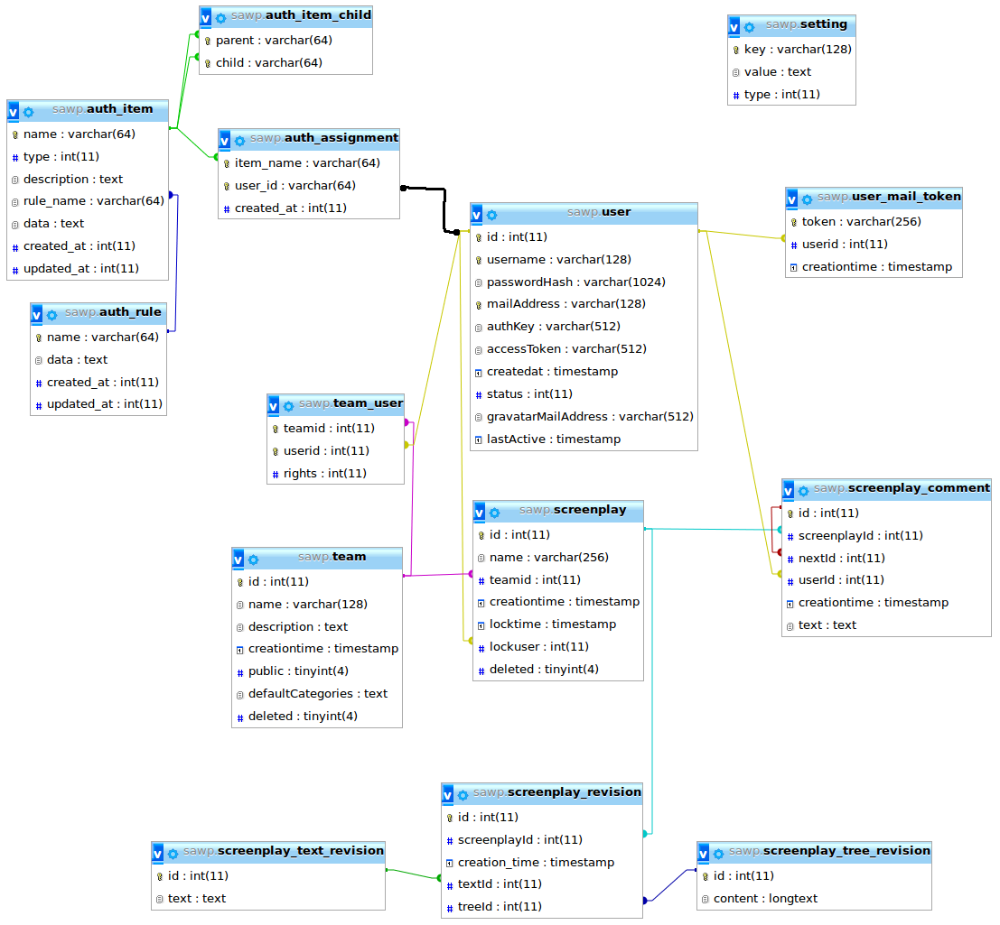

Database
We use InnoDB with foreign key constraints. All foreign keys are colored lines(not the black one) in this model:

auth_assignment
Yii2 table. Global rights assignment for users
- item_name: role for user. Can be admin or user. The adminright includes all userrights
- user_id: id of user, is not a innodb foreignkey, because there is an entry, before the first user is created.
- created_at: linux timestamp when right was assigned
auth_item
Yii2 table. All single rights, that belong either to admin or to user.
- name: name of the right
- type: 1=global right, 2=single right
- description: Description of the right
- rule_name: if not null the right is only availiable if the class named in rule evaluate to true
- data: Not sure, check yii2 documantation. Is always null
- created_at: Time when item was created
- updated_at: Time when item was updated
auth_item_child
Yii2 table. Assign single rights to Global rights and User to admin.
- parent: name of parent right (admin/user)
- child: name of child/single right
auth_rule
Yii2 table. Rules that give rights dynamically. Used for userroles in teams.
- name: name of rule
- data: data of rule. Contains Classname.
- created_at: Rule was created at this date.
- updated_at: Rule was updated at this date.
screenplay
Table for all screenplays.
- id: id of screenplay
- name: name of screenplay
- teamid: teamid the screenplay belongs to
- creationtime: Time the screenplay was created
- locktime: Time the screenplay was last locked (edited by a user, javascript send keepLock)
- lockuser: Locked by this userid
- deleted: 1 if deleted
screenplay_comment
Table for comments.
- id: id of comment. If it is the first comment in the Thread, it is the id written in the anchor ( inside screenplay text)
- screenplayId: screenplayid the comment belongs to
- nextId: null if it the last comment in thread, or the id of the following comment
- userId: id of the author of the comment
- creationtime: Time when comment was written
- text: Textcontent of comment
screenplay_revision
Table for screenplay revisions. A revision includes a tree and a text revision.
- id: id of the revision
- screenplayId: screenplayid the revision belongs to
- creation_time: Time when revision was saved
- textId: id of text revision
- treeId: id of tree revision
screenplay_text_revision
Table for screenplay text revisions.
- id: id of the text revision
- text: screenplay content of this text revision (html)
screenplay_tree_revision
Table for screenplay tree revisions.
- id: id of the tree revision
- content: screenplay tree of this tree revision (json string)
setting
Table for global site settings.
- key: name of this setting (for example pagetitle)
- value: Value of this setting (for example My first page)
- type: Type of this setting (1=boolean, 2=integer, 3=string)
team
Table for teams. A team is a group of users that work on the same screenplays. Every user has a specific role (see team_user)
- id: id of the team
- name: name of the team
- description: description of the team
- creationtime: time when team was created
- public: 1 if team is public
- defaultCategories: default Categories for new created screenplays. (json string)
- deleted: 1 if team is deleted
team_user
Assignment team to user.
- teamid: id of the team
- userid: id of the user
- rights: role of the user (0=director, 1=artist, 2=observer)
user
Table for users.
- id: id of the user
- username: name of the user
- passwordHash: hash of the password
- mailAddress: mailaddress of the user
- authKey: Not sure, check yii2 documantation.
- accessToken: Not sure, check yii2 documantation.
- createdat: Time when user was created
- status: status of the user (0=new/not activated, 1=active/mail verified, 2=banned, 3=deleted)
- gravatarMailAddress: Mailadress for gravatar icon. If null the normal mailaddress will be used
- lastActive: Time when user was last online
user_mail_token
Tokens send in activation mails.
- token: token send via mail
- userid: id of the user
- creationtime: time when token was created (user registered)